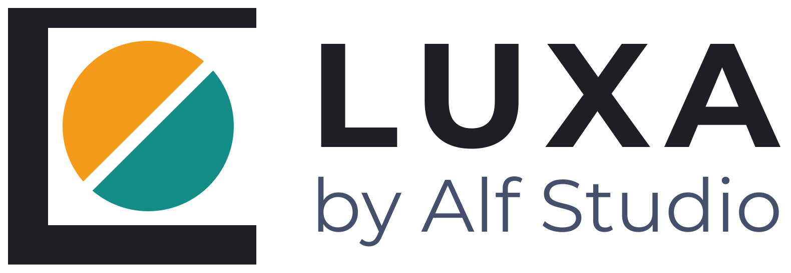

Mockup Fase 4
Statis, bukan aplikasi. Angka diambil dari engine untuk model Facade only to Alfian.3dm. Gambar menara hanya ilustrasi viewer.
- LUXA · Unggah model
- LUXA · Konfirmasi model
- LUXA · Inspeksi model
- LUXA · Hasil
- LUXA · Hasil (gelap)
- LUXA · Memuat dan galat
- LUXA · Panel tampilan
- LUXA · Pintasan
- LUXA · Bandingkan